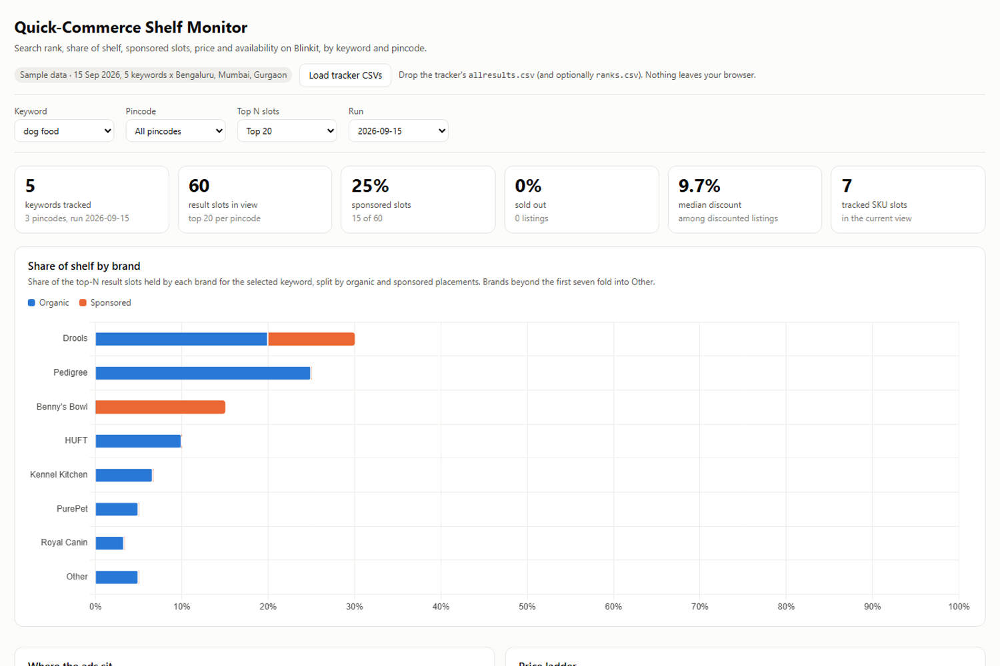

Settlement reconciliation that separates a real shortage from a missing feed, and shelf monitoring that shows where your SKU actually ranks, by keyword and pincode.
Recon figures below are synthetic — the failure modes are notSample pass: one personal-care brand, one platform, one month — 4,120 PO lines, 183 SKUs, ₹2.41 cr ordered. The platform appeared to be short-paying ₹16.4 lakh.
| What the ₹16.4L was | Value | Share | Verdict | |
|---|---|---|---|---|
| GRN feed gap — received, never reported | ₹6,56,000 | 40% | Do not chase | |
| Short-receipt, credit note never issued | ₹4,10,000 | 25% | Claim it | |
| Rate difference — billed at the old price | ₹2,46,000 | 15% | Claim it | |
| Returns netted in, no SKU detail | ₹2,46,000 | 15% | Split first | |
| True shrinkage | ₹82,000 | 5% | Accept | |
| Apparent shortfall | ₹16,40,000 | 100% | ₹6.6L real |
Six SKUs carried 78% of the exposure — two of them pure feed gaps needing no claim at all. Without the split, all six look like the same problem.
Each partner mangles references differently. A lookup on the reference column matches most lines and silently drops the ones that matter.
One landing 60 days on settles an invoice from two cycles back, and often nets several POs at once.
Yours and the platform's. Match price without a date window and every revision week becomes a phantom shortfall.
Matching runs exact reference → PO + SKU in a date window → normalised reference → manual queue. In this sample 2.1% of lines stayed unmatched. A pass claiming to match everything is hiding its failures inside a loosened rule.
My own tool, not an employer's. It captures the Blinkit result page for a keyword in a given pincode and turns it into share of shelf, sponsored slots, price ladder and stock-outs — so you can see who is buying the shelf above you, and where you fell off it. It now runs on Blinkit, Zepto, Instamart and Flipkart Minutes: 16 searches in 13 areas, every three hours. Open the live dashboard →

The public dashboard has no server: the same SQL runs in your browser over a snapshot refreshed after each run.
The P&L modelled in SQL from sales register to EBITDA — material cost, yield loss, returns provisions and marketing spend allocated per SKU, with an absorption check proving every rupee of cost lands somewhere.
Plain-English questions become read-only SQL against the warehouse, answered with the numbers and the query. Access control lives in the database, not the prompt.